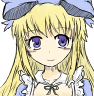
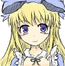

Alice meets us even earlier than Jeanne. And if Jeanne communicates with the player only through the character. But Alice speaks to the player directly. She asks us our name and class. There are only three of them, unlike in Dark Souls. You could say that this dialog serves as the initial character creation screen from Series of Sols. It also asks us if we want to see the cooking with all the details or if we prefer to leave it behind the scenes, so that the one who mistakenly launched this game could play it safely without fear that behind the back someone will appear at the most important moment. We can immediately understand by a single icon in the corner of the screen of a girl with blonde hair in a blue dress. That in front of us is the same Alice from Lewis Carroll's fairy tale "Alice in Wonderland". At the end, Alice says goodbye and turns into a red puddle. Ketchup, of course. You don't even get to try and put her back together and you're taken back to the beginning of the game. To the prison where we meet Jeanne. Then we can meet her in the course of the game in the Wonderland location. Probably, to show Wonderland's insanity on such a weak engine as rpg maker with the help of bunnies stuck in textures is the most ingenious thing I've ever seen. I lied to you, though. That's not Alice in there. I'm a copy of her, a living doll from Alice 02. We won't be hearing about this kind of technology to create clones of ourselves. The real Alice was split into a very large number of little ones at the very beginning of the game. This Alice is sitting in the library. And unfortunately, you can not take her as a companion. But at least the true ending is partly connected with her. We can bring story books to the library.. Each shelf is signed, and we can walk up and read who exactly we need to still find. Fairy tales fall from the characters in those fairy tales. Well, for example, having met a wolf that ate three piglets and having killed him, then from him we get a fairy tale about three piglets. And if we collect all the fairy tales we need in this way, a secret door opens. Which is what we need for the true ending. But it's very difficult to do it on the first playthrough.
Tale of black soul
"Where is Alice?"
 
